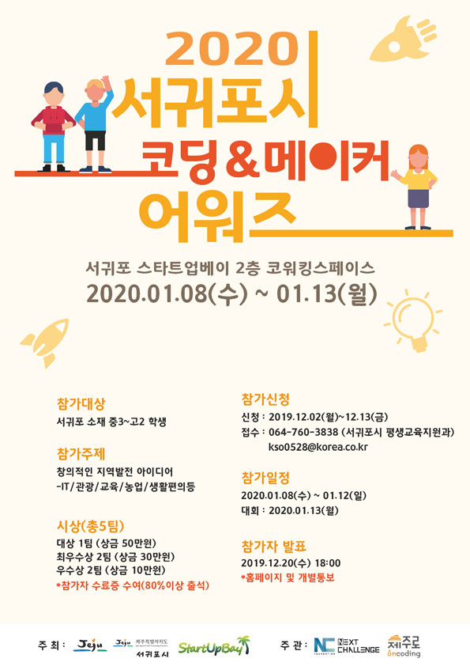
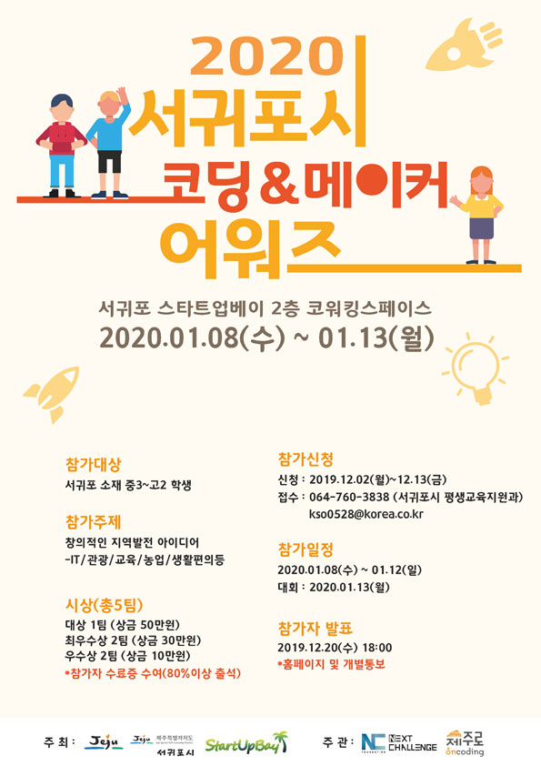
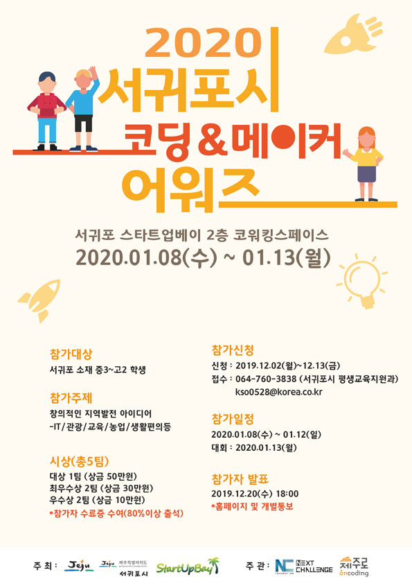

다가오는 프로그램
 

최근

최근
먼저, 한국 생산성 본부에서 실시하는 "SW코딩자격"이 있습니다. 교육부와 과학기술정보통신부의 SW교육
운영 기조에 부합하는 과정으로 구성되었으며, 국제 IT 자격기관인 ECDL Foundation과 공동개발하여
국제 평가 표준을 반영합니다."sw코딩자격"은 블록 코딩의 기초인 스크래치 엔트리를 이용해 평가하는 방식입니다.
현재는 2급과 3급이 진행되고 있으며 각각 4과목, 2과목을 평가합니다.
sw코딩자격증 홈페이지:
바로가기
다음으로 CLA는 C++ INSTITUTE가 공인하는 국제인증 자격시험으로,
준 전문가 수준의 기본 국제자격증 입니다. 기본적인 프로그래밍 기술, 방법, 어휘와 가장 일반적인 라이브러리 함수들을
다룰 수 있는 능력 뿐만 아니라, C 언어 관련 기본 프로그래밍 관련된 코딩 과제들을 수행하기 위한 능력을 측정하는
프로페셔널 자격증 입니다. CLA자격증을 취득 했다는 것은 C 언어 프로그래밍의 기본 지식을 습득했음을 의미합니다.
시험은 두가지로 구성되어 있습니다. 첫 번째는 C 프로그래밍 언어를 다루는 것이고, 두 번째는 C++프로그래밍 언어를 다루는 것입니다.
각각의 프로그래밍 언어들에 대한 시험은 총 세 가지의 레벨로 구성되어 있습니다. 응시자는 먼저 낮은 레벨의 자격증을 취득한 후에,
더 높은 레벨의 인증서를 취득할 수 있습니다.
CLA자격증 홈페이지:
바로가기
마지막으로 소개할 자격증은 "SW 테스트 전문의 자격증"입니다. 이 자격증은 공인민간자격의 일반 등급과
등록인간 자격의 고급등급으로 구성되어 있습니다. 일반등급은 누구나 응시할 수 있으며 소프트웨어
테스트에 대한 기술이론 지식, 테스트 설계, 실행 종료등 테스트 프로세스를 설계할 능력을 평가합니다.
그에 반면해 고급등급은 소프트웨어 및 테스트 관련 5년 이상의 격력자 혹은 SW테스트 전문가 일반등급은
자격취득자 중 해당 분야 3년 이상의 경력자만 지원할 수 있습니다.
관련정보:
더 알아보기